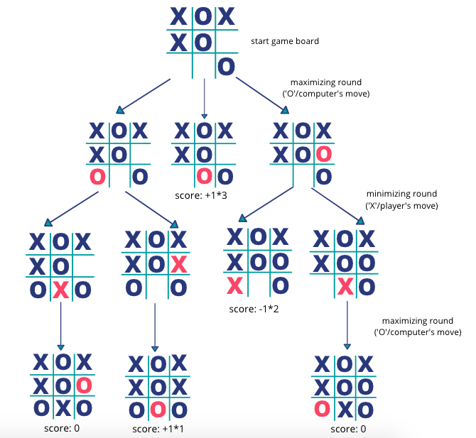

5. (선택 사항) AI 움직임
컴퓨터가 생각하게 만들기
이전 단계에서는 컴퓨터가 랜덤으로 움직임을 선택하도록 만들었습니다. 그러나 이 방법으로는 컴퓨터의 경쟁력이 낮습니다.
이 단계에서는 Minimax 알고리즘을 사용하여 인공지능을 프로그램에 추가함으로써 게임의 난이도를 높이겠습니다.
Minimax 알고리즘
Minimax 알고리즘은 두 플레이어가 있는 게임에서 각 플레이어가 최선의 결정을 내리도록 도와줍니다.
-
두 플레이어는 각각 maximizer와 minimizer로 분류됩니다. maximizer는 승리할 확률을 극대화하는 반면, minimizer는 패배를 최소화하려고 노력합니다.
-
알고리즘은 현재 게임 보드를 기반으로 가능한 모든 미래 게임 상태를 검토하며, maximizer와 minimizer가 자신에게 가장 유리한 선택을 할 것이라고 가정합니다.
-
우리의 경우 컴퓨터를 maximizer로, 플레이어를 minimizer로 설정할 것입니다. 컴퓨터가 승리 가능성을 극대화하도록 최적의 결정을 내릴 것입니다.
Minimax 알고리즘이 틱택토에서 작동하는 방식
컴퓨터 **“O”**의 움직임에 따른 모든 가능한 게임 상태를 검사하고, 승자 또는 무승부가 발생한 게임판에 점수를 매깁니다.
점수는 다음과 같이 계산됩니다: • 컴퓨터가 승리한 경우: 1 * (남은 빈 칸의 개수 + 1) • 플레이어가 승리한 경우: -1 * (남은 빈 칸의 개수 + 1) • 무승부인 경우: 0
컴퓨터가 가장 적은 수의 턴으로 이기도록 하기 위해, 컴퓨터가 이기는 게임 상태에 더 높은 점수를 부여합니다.
다음은 예시입니다:
-
첫 번째 행에서의 컴퓨터의 가능한 수: 컴퓨터 “O"는 첫 번째 행에서 3가지 가능한 수를 고려합니다.
-
모든 게임 상태를 검사: 모든 게임 상태를 검사하여 컴퓨터가 이기거나, 플레이어가 이기거나, 무승부가 될 때까지 진행합니다. 각 상태에 대해 해당 점수를 부여합니다. 예를 들어, 두 번째 보드에서 컴퓨터는 위치 8에 “O"를 놓아 승리합니다. 이 상태는 점수 1 * (보드의 남은 자리 수 + 1)로 계산됩니다. 즉, 1 * (2 + 1) = 3이 됩니다.
-
승자나 무승부가 없는 상태에서의 점수 선택: 승자나 무승부가 없는 상태에서는 “X"가 수를 두는 최소화 라운드에서 가장 작은 점수를 선택하고, “O"가 수를 두는 최대화 라운드에서 가장 큰 점수를 선택합니다.
-
최적의 수: 위의 과정을 통해 최적의 수를 찾으면, 컴퓨터는 위치 8에 “O"를 놓는 것이 최적의 수임을 알 수 있습니다. 이렇게 하면 컴퓨터는 시작 게임 보드에서 1수 만에 승리할 수 있습니다.
코드 구조
activity-3에서 getComputerMove(String[] curBoard) 메서드를 작성하여 컴퓨터의 움직임을 랜덤하게 선택했습니다. 이번에는 최적의 움직임을 반환하는 getComputerMoveAI(String[] curBoard) 메서드를 작성합니다. 이 메서드는 내부에서 int minimax(String[] curBoard, boolean isMaximizing) 메서드를 호출하여 최적의 결과를 얻습니다.
int getComputerMove(String[] curBoard){
// 1. this method calls minimax() on all the possible moves the computer can pick
// 2. it takes the maximum out of all of them
// 3. return the optimal move
}
int minimax(String[] curBoard, boolean isMaximizing){
// 1. In the maximizing round, it calls minimax() on all the possible moves for the computer, "O", return the maximum score
// 2. In the minimizing round, it calls minimax() on all the possible moves for the player, "X", return the minimum score
}
minimax() 메서드는 재귀 함수로, 자기 자신을 호출하면서 다른 가능한 게임 상태들을 검사합니다. 이 메서드는 “X” 또는 **“O”**를 각각 가능한 위치에 배치한 후 **minimax()**를 다시 호출하여 최적의 점수를 계산합니다.
getComputerMoveAI() 메서드 작성하기
게임 보드에서 사용 가능한 각 위치에 대해 해당 위치에 "O"를 배치하고 minimax()를 호출하여 해당 보드의 점수를 얻습니다.
- 두 번째 인수로 false를 전달해야 하는데, 그때는 최소화자(minimizer)의 차례이기 때문입니다.
점수를 얻은 후에는 그 자리를 다시 " “로 바꿔야 합니다. 그래야 다음 반복(iteration)에서 게임 보드의 원래 상태를 유지할 수 있습니다.
- 각 반복에서 최대 점수와 해당 위치를 추적합니다. 최대 점수를 가진 위치를 반환합니다.
- “현재 최고의 점수를 저장하는
bestScore라는 변수를 만들고, 초기 값으로Integer.MIN_VALUE(정수의 최소값)를 설정합니다.
이는 데이터 구조에서 최대 값을 찾는 유용한 방법입니다. 예를 들어:
public int getLargestNum() {
// the following code find the maximum value in the array "nums"
int[] nums = {3, 5, -2, 10};
int largestNum = Integer.MIN_VALUE;
for(int i = 0; i < nums.length; i++){
if(nums[i] > largestNum){
largestNum = nums[i];
}
}
return largestNum;
}
메서드 ‘minimax()‘를 작성하기
위에서 논의한 바와 같이, ‘minimax()’ 메서드는 ‘int minimax(String[] curBoard, boolean isMaximizing)’ 헤더를 가지고 있습니다.
- 보드에서 ‘getWinner()‘를 호출하여 우승자가 있는지 확인합니다. 그렇다면 해당 점수를 반환합니다.
점수: 컴퓨터 승리 (‘1 * 보드에서 사용 가능한 자리 수 + 1’), 플레이어 승리 (’-1 * 보드에서 사용 가능한 자리 수 + 1’), 동점 (‘0’).
- “최소 최대 점수 얻기
만약 최대화자(maximizer)의 차례(“O”)라면, 게임 보드의 각 가능한 위치에 “O"를 놓고 minimax()를 호출하여 해당 보드의 점수를 얻습니다.
만약 최소화자(minimizer)의 차례(“X”)라면, 게임 보드의 각 가능한 위치에 “X"를 놓고 minimax()를 호출하여 해당 보드의 점수를 얻습니다.”
- 최대 점수 반환
- 만약 최대화자의 차례(“O”)라면, 각 반복에서 가장 큰 점수와 해당 위치를 추적하고 그 점수를 반환합니다.
- 만약 최소화자의 차례(“X”)라면, 각 반복에서 가장 작은 점수와 해당 위치를 추적하고 그 점수를 반환합니다
메서드 테스트하기
main() 아래에 두 개의 메서드를 복사하여 붙여넣으세요.
Run을 클릭하여 메서드를 테스트하세요. 위 그림의 예제에 대한 주어진 테스트가 제공됩니다.
원하는 출력이 나오는지 확인하기 위해 다른 보드를 입력해 볼 수 있습니다 Replit 실행하기
Remember to test your methods!
프로그램 업데이트
메서드를 테스트한 후, TicTacToe 프로그램의 모든 getComputerMove() 호출을 getComputerMoveAI()로 업데이트하세요.
이번에는 이기는 것이 훨씬 더 어려울 겁니다 😀!

성공했어요!
워크숍 완료